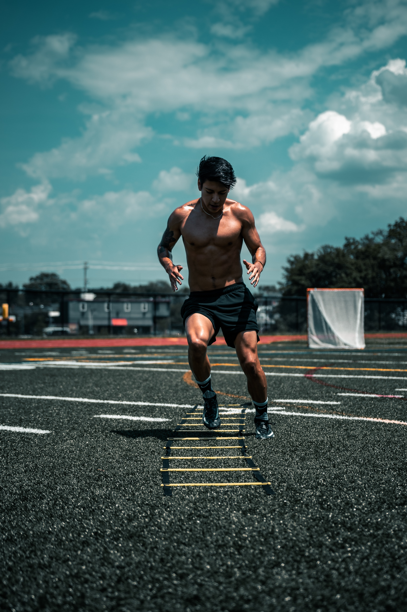
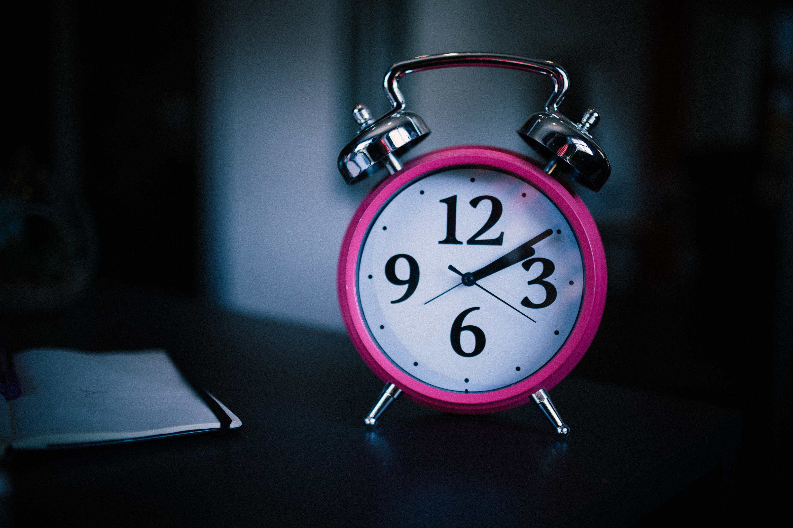

10 Goals to Set for 2022: Soccer Athlete Edition
By Francisco J. Perez

The new year is finally here which means it is time for a fresh new start and time to achieve new accomplishments. It’s become a habit for many, including myself, to take this time as a moment to reflect and set goals otherwise known as “resolutions” for ourselves. Although it may seem cliche, goal-setting is proven to benefit many. Setting an intention forces us to develop habits and skills in order to get closer to our goals especially for athletes. As athletes we are constantly preparing ourselves for high performance and in order to reach new heights it is imperative that we visualize the journey ahead of us. Reminder: set your targets and always strive for more. With that said, here are my top 10 Goals to Set for 2022 specifically curated for soccer athletes.
Disclosure: Although many of these targets are worded specifically for soccer players, athletes of any sport can benefit from these ideas. Simply apply them to your sport and find ways that they relate to your particular lifestyle.
- 1. Consistent Training Regime:
- It’s easy for many young athletes to get lost in the idea of wanting to be the “best”. We always want to strive to be the top goal scorer or the MVP of our league. Although there’s nothing wrong with being ambitious, we fail to realize that these are very open-ended goals that leave a lot of things out of our immediate control. Don’t be discouraged, I made the same mistakes! This is why setting a Consistent Training Regime is much smarter in the long-run.
Aiming for a consistent training regime allows us to be in control, and strive for quantity and quality during our training sessions. Set a goal on the number of hours you spend training independently, on top of your team training. For example, if you are on a club or high school team training 2 times a week for 2 hours, set a goal to add an extra hour and a half, 2 days a week to your training. This will allow you to train for 7-hours per week, as opposed to the original 4-hour week. With some consistency, this small increase in time is monumental in the long-run, as you are now getting more reps in each week. This will surely get you closer to your goal of becoming “league MVP”!
- 2. Early Arrival to Practices/Games:
- Strive to arrive early to practices and games. Yes, this might seem subtle, but believe me, this small change can impact your focus tremendously. If you’ve ever run late to a practice session or game you might have felt anxious or disoriented upon arrival and even perhaps in the first couple of minutes. Arriving 15-30 minutes before you are supposed to be at the field, allows you to get in some extra stretching, touches, or even talk with the coaches beforehand. This is a great habit to develop early on in your career. Many coaches pay attention to this subtle detail. Those who arrive the earliest stay at the top while the others fall behind.
- 3. Improve Fitness/Conditioning:
-
This one seems to be an obvious one! Setting a fitness and conditioning goal is super important at any level in your soccer career. Like I said before, it is important to set goals that are completely in your control and fitness is one of them. Without proper fitness, we will never reach our capacity to be the best versions of
ourselves as soccer players, since the game is so demanding. Regardless of your position- midfielder, forward, center-back, outside-back, or Keeper- fitness and conditioning is something we constantly need to work at. This new year, aim to increase your fitness goals gradually and consistently. Add a 15-20 minute fitness session (some sort of HIIT workout preferably) to some of your training days as well as some sort of strength exercises (planks, squats, push-ups, lunges, etc.). With a good balance and some consistency, this will become second nature and come game-time, your hard-work will pay off.

- 4. Learn a New Skill or Trait:
- Set a goal to learn a new skill or trait this year. If you’re a Midfielder, learn a new dribbling move like “sole-behind” or an “elastico”. If you’re a defender, learn how to give a good, lofted ball with your weak foot. Maybe strive to become a sort of “set-piece maestro”! There are so many new micro challenges within the game that will develop you into a well-rounded soccer player. Every month, be consistent in trying something new during your training, in order to add them to your repertoire. This will not only add to your “skill set” but it will increase your confidence and add some personality to your game--- both things that are subtle yet pivotal to your career.
- 5. Watch More Soccer:
- From here on out, we will dive into goals that impact your game on the field, but require your attention off the field. This year, you should set a goal to watch more soccer. Watch games on TV Saturdays and Sundays, or Champions League fixtures Tuesdays and Wednesdays. Watch highlights or recaps on YouTube or even re-runs of games online. The best way to learn how to play like a “pro,” is by watching and attempting to imitate the pros first hand. Pay attention to the way these players move, communicate, and play. Watch for mistakes being made and how they react. You can learn alot from this if you actively watch. Make sure to take either mental or physical notes, especially from those in your position. Once you find some players you identify with, pick up some of their good habits and implement them into your game. Set a goal of watching at least one game per week and attempt to get your hands on your own film to analyze. This is perhaps my pick for the most underrated tip in 2022!
- 6. Take Time to Organize:
- When things are organized, there is a sense of calmness and control. Therefore bring this sense of control to your game by being organized in all aspects of your life. Set the goal this year to take 15-20 minutes everyday to organize and clean your soccer equipment-- cleats, bags, shoes, cones, etc. This might initially feel like a really annoying chore but, believe me, it goes a long way. Waking up on game day knowing you are ready to go creates a sense of calmness and confidence that allows you to completely shift your focus to your individual self as well as your game. This also helps build a sense of pride knowing you are taking care of your items. You know what they say: “Look good, feel good, play good!”.
-
7. Consistent Sleep & Wake Times:
- Sleep is something that most of the time gets ignored by young athletes and that is a huge mistake. Having a consistent sleep cycle, let alone enough sleep, impacts your energy levels on and off the field. When we lack good sleep we become less focused, less reactive, and less energetic. Don’t let this be you! Set the intention to be in bed by a certain time in order to get your full 7-9 hours of sleep! Ideally, you always want to strive for the full 8 hours to be at your optimal level. Don’t wake up early one day and never do this again for the next month! Be consistent in your sleep patterns. For example, I can’t wake up at 4 am everyday, so I adjust my schedule to allow myself to be up at a time that works for me, which is 7:30 am. In order to do this, I make sure I’m winding down by 11:00 pm and lights out no later than 11:40 pm. Just because this schedule works for me, it doesn't mean it will work for you. Create a schedule that works for you, so you too can average 8 hours of sleep! As you become consistent with these habits, your energy levels and focus will continue to improve and you’ll find yourself having less injuries and better quality training sessions.
- 8. Improve Nutrition:
- It’s true! You are what you eat. If you constantly fuel yourself with junk food and sugar induced drinks, don’t expect prime results. One of the best soccer athletes on the planet, Cristiano Ronaldo, prides himself in excellent preparation and most importantly, his nutrition. He constantly talks about how he eliminates chips, candy, juice, and soda from his diet. It is no coincidence that at 36 years old, he is still performing at a very high level. In 2022, set the goal to be more mindful of your own eating habits. Perhaps you cannot change your eating habits right away, but you can start small. Add a serving of fruits and vegetables to every meal, substitute soda and juice for water, and reduce your junk food intake. Making these small changes will allow you to slowly change your diet and palette to introduce something more nutritional.

- 9. Meet With Coaches/Mentors:
- The best way to keep yourself in check is to ask those around you for feedback. What better way to do this than by setting up some time to talk with coaches and mentors. There’s nothing coaches love more than a player who shows passion and interest in improving their game-- after all, their job is to develop players. This year, set your goal to meet with coaches and mentors at least 3 times a season--- once at the beginning, once in the middle of the season, and once at the end. Share with them some of your concerns or questions you have about your individual game. Talk about some of the goals you plan on aiming for this year and ask for their feedback. Mentors and coaches have much experience after years of playing and coaching and thus their tips can and will take you far!
- 10. Get Out of Your Comfort Zone:
- Finally, this year set a goal that gets you out of your comfort zone. What do I mean by this? Let me explain. Most of the time we move around in spaces that are known to us, I call this our comfort zone. The unknown is created the moment we venture into unfamiliar territory on the field, this is what I call the uncomfortable zone. Those of us that are adventurous maneuver closer to the uncomfortable zone, than those of us that are much more timid. Regardless of which one you are, there is something notable about trying things outside of your comfort zone. It creates confidence and forces you to think on your feet. Therefore, this year I challenge you to do something you don’t necessarily feel 100% confident doing. It can be soccer-related like playing out of position, playing with a new team, or working on your weak foot finish. However, it can also be non soccer-related like practicing another sport or public speaking. These will translate into your game in a way you would have never imagined. You’ll gain confidence, you’ll gain personality, and even perhaps be able to gain perspective in ways you didn’t see before. Regardless of what it is, dare to try and I promise you’ll be better for it.
These 10 Goals to Set for 2022 are in no way meant to be an overall fix or hard-wired by any means. They are simply suggestions and guidelines that have helped me reach peaks and new levels in my game. You don’t have to adopt every single one of these goals, but just pick those that resonate with you. Maybe all of them do. Setting your intentions to train consistently will allow you to prove to yourself that you can be the best version of yourself if you work for it. It’s not about the quantity, but more so the quality of the training sessions. Consistency and quality. Remember that! Best of luck to all you athletes out there this year. May 2022 be prosperous to you!